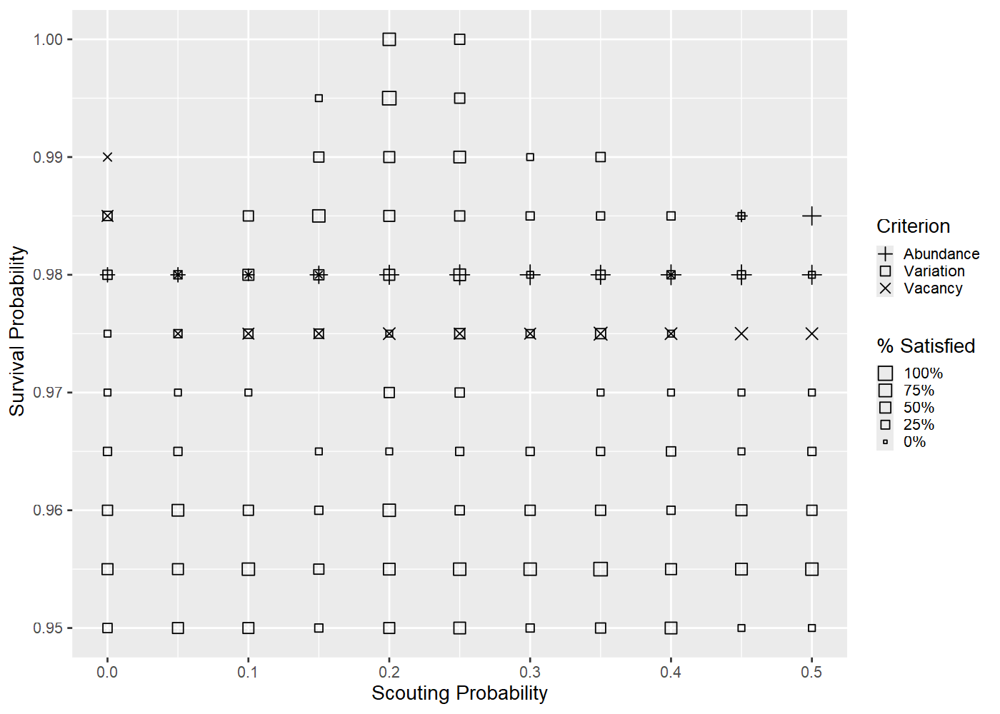
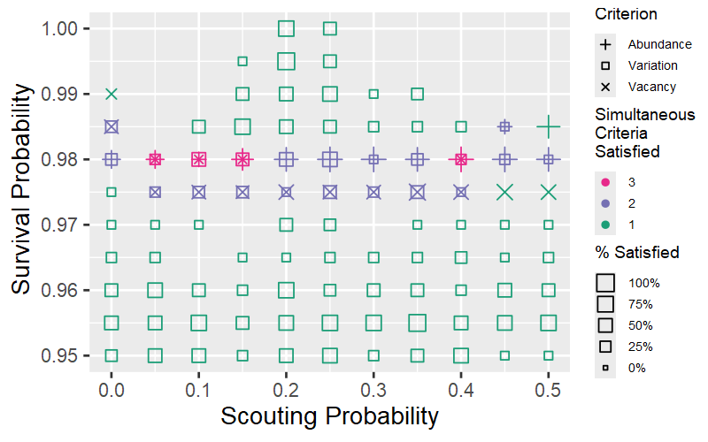
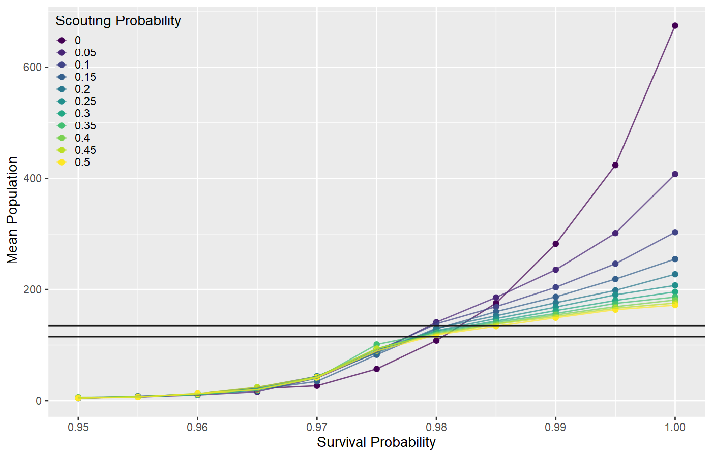
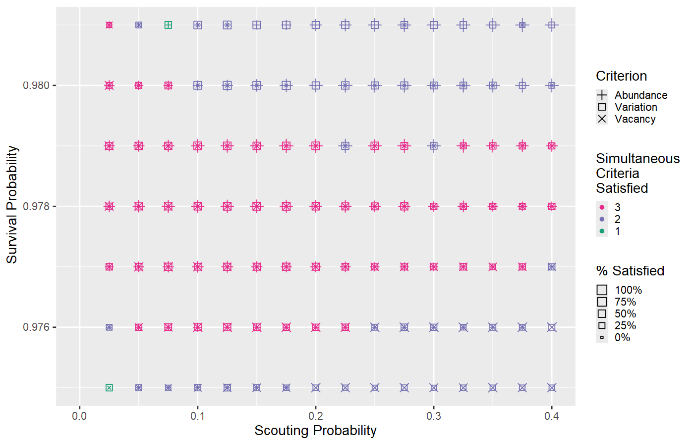
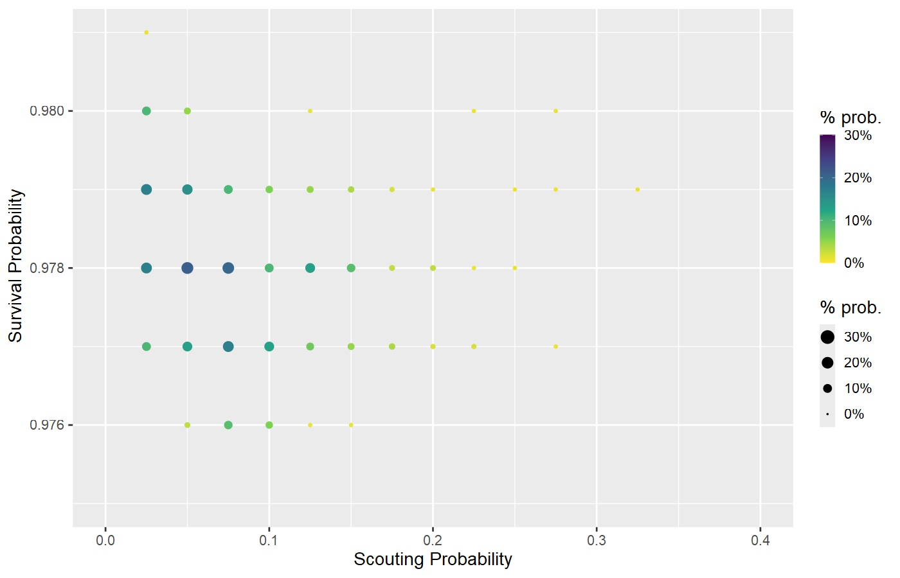
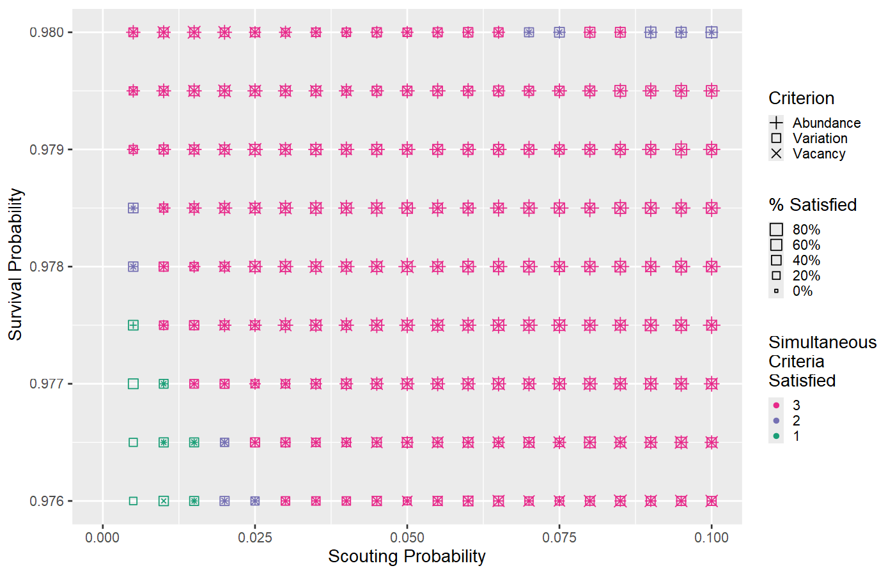
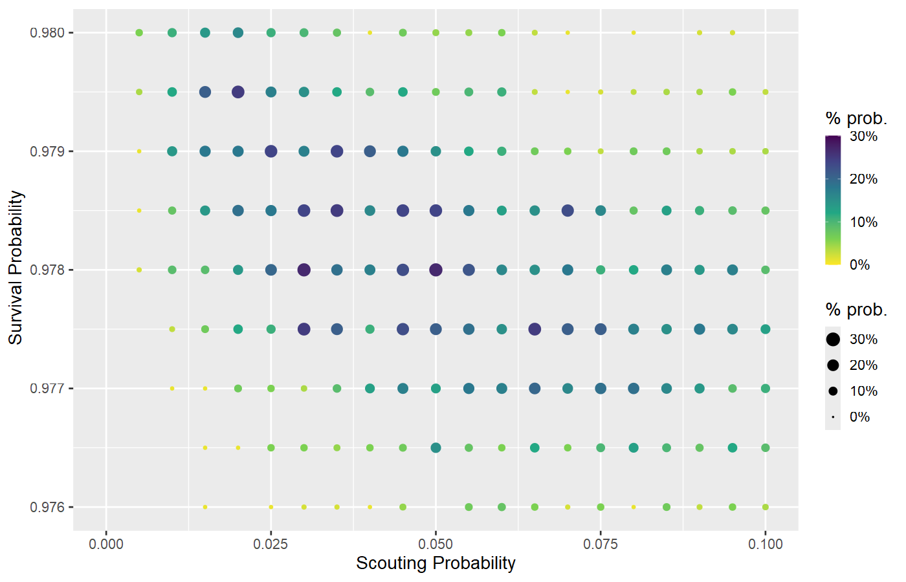

Parameterization and Calibration
EES 4760/5760
Agent-Based and Individual-Based Computational Modeling
J. Magnolia Gilligan
Class #22: Thursday, November 12, 2026
Download new Wood Hoopoe model
- class_22_models.zip from the downloads page
- or https://ees4760.jmgilligan.org/models/class_22/Sect20-5_WoodHoopoes_2ndEd.nlogox
Vocabulary:
Vocabulary:
-
Parameterization:
- For many modelers, this means choosing values for parameters.
- More parameters = more uncertainty (bad)
- Value parsimony
- For ABMs, it’s different:
- Many submodels
- Parameterize and test submodels separately
- Many submodels
- For many modelers, this means choosing values for parameters.
- Calibration
- A special kind of parameterization
- Adjust a few important parameters to reproduce patterns observed in real system
Theory-Development vs. Parameterization/Calibration
-
Theory Development:
- Develop different submodels for agent behavior & decision-making
- Identify the submodels that best reproduce a range of observed patterns
-
Parameterization and Calibration:
- With a given submodel,
- Decide which parameters to vary and which to leave fixed
- Choose values for the fixed parameters
- Find the values for the variable parameters that best reproduce observed patterns
- With a given submodel,
Testing and Calibrating
Testing and Calibrating
- Test program: Has it been implemented correctly?
- Test submodels: Are they doing what you think they are doing?
- Verification: Is the model doing what it’s
supposed to do?
- Reproduce patterns, data, observations.
- Understanding: What’s going on? Why?
- Validation: Can we find new (independent, secondary) patterns in the model that we can test against new observations?
Theoretical Models
- No data to calibrate from
- “Guesstimate” parameter values from what you do know.
- Perform sensitivity analysis to see how important it is to
“get parameters right”
Challenge
Challenge
- Model and system are complex
- We don’t know exactly what model is “supposed to do”
- Any pattern in the output could be a bug or a feature
- Brute-force analysis does not work (you can’t try every possible value of each parameter)
- We need a plan!
Master Plan for Analysis
Master plan for analysis
Controlled Simulation Experiments
- Controlled = simplify
- If I kill all individuals, population should be 0
- If I double mortality rate, population should decrease
First experiments
- Explain your model to others
- Ask others to look at your model and code
- Graphical, numerical output of entities and state variables
- Monitors, graphs, print output, save output to a file
- Use NetLogo inspect feature (right click on a patch or turtle)
- A step button to execute one step at a time
- See what happens
Test submodels separately
- Create a separate testing model
- Make a controlled environment for your submodel
- For research: Document your testing, keep notes and files
Patterns
Patterns
- Low-level debugging (one line of code at a time) is too slow
- To speed things up, focus on patterns
- Analysis means:
- Tuning parameters,
- Turning submodels on and off
- Observe how patterns change.
- Examples:
- Population after 48 days
- Total biomass
- Variance of turtle size
- Spatial patterns: are turtles bunched up or spread out?
- etc.
Categorical vs. Best Fit
- Best-fit: Numerical data, minimize difference.
- Best when many real world systems always have same values.
- Categorical:
- True/False, or ranges of values
- Best when real-world system has a lot of variation but there are distinct patterns
Don’t panic!
- Finding good patterns to use is hard.
- You might need to test many patterns
- You will need multiple patterns
- It is hard work, but it can be fun
- Just as with real experiments, it is important to think creatively.
Example: Woodhoopoe Model
Example: Woodhoopoe Model
- Use “random scouting” submodel
- Parameters:
- Survival probability (mortality)
- Scouting probability (can’t be directly measured in real world)
- Calibration Criteria
- Variation in real groups, so we’re not trying to reproduce a
specific value.
- Categorical calibration
- Three patterns from field observations:
- Abundance: Total population in range 115–135 (25 patches)
- Variation: Standard deviation of population from one year to next in range 10–15
- Vacancy: On average, 15–30% of patches missing one or both alphas.
- Variation in real groups, so we’re not trying to reproduce a
specific value.
https://ees4760.jmgilligan.org/models/class_22/Sect20-5_WoodHoopoes_2ndEd.nlogox
Behaviorspace Experiment
- Monitor
-
count turtlesand count patches with [(count turtles-here with [is-alpha?]) < 2]
-
- Run for 22 years (264 ticks)
- Vary
scout.probfrom 0.0–0.5 by 0.05 - Vary
survival.probfrom 0.95–1.00 by 0.005 - 121 combinations
- Analyze behaviorspace output file:
- Throw away first two years (warm-up)
- Look at month 11 (November, just before breeding)

Interpreting results

- A few combinations reproduce all three patterns simultaneously.
- Abundance pattern only for
survival.prob= 0.975–0.985 - Vacancy pattern only for
survival.prob= 0.975–0.990

Next steps

- Explore region near
survival.prob∼ 0.975–0.985
andscout.prob∼ 0.025–0.40 - Try changing scouting submodel.
Detailed Calibration

Satisfying All Three Criteria

Zoom in more
- Explore region near
survival.prob∼ 0.976–0.980
andscout.prob∼ 0.005–0.100
Finer-Scale Calibration

Satisfying All Three Criteria (Finer Scale)
